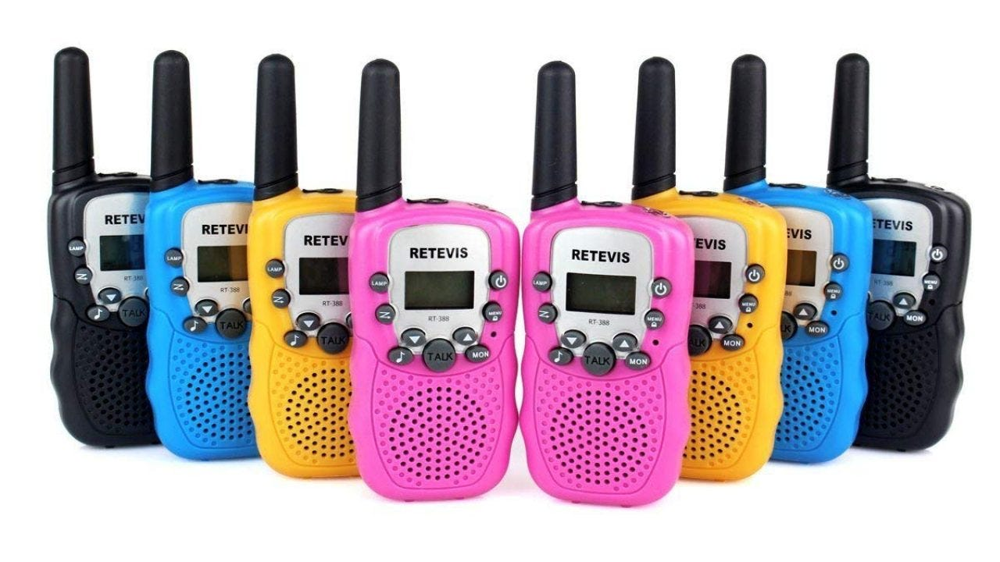
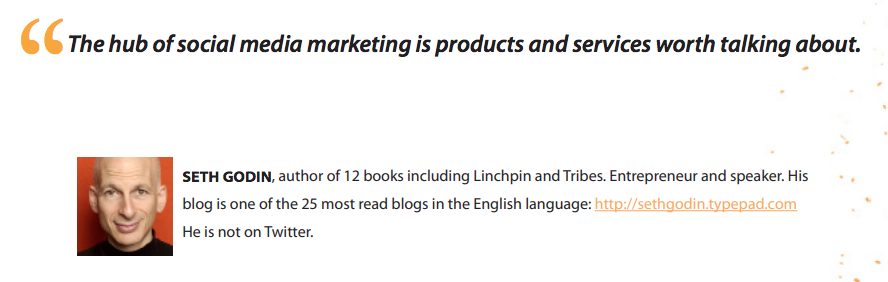
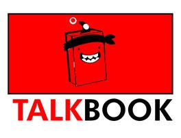
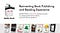

Talkable products and services
are products and services worth talking about


Products and services and events worth talking about are not only the hub of social media, they are their raison d’etre because what social media does is free and ease people the way for connecting and talking with others. After first providing a frictionless medium of communication and connection, the second goal of a social media platform is to bring products, services, and events worth talking about not to run for companies and self entrepreneurs willing to pay ads and letting them find what worth talking or not.
Todays social media are relying on algorithms to discover what’s worth talking about and promote it with recommendation systems but when your stock price and revenue depend on whose paying the premium ads price, it is very tempted to promote what’s worth a lot of dollars.
After reading this several passionate bloggers talking about corporate blogging their message resonated with me. Particularly this one


Which reminded me that the choice of making TalkBook a no advertising book-driven space that connects people and lets them talk about talkable books and ideas is a good decision but it will cost all of us a certain amount of money.
If you want to be part of such a book-driven space, I highly recommend you to use this form because TalkBook is a book-driven social platform operated by Book Dojo a mail-only startup publishing data-driven books, building book-driven platforms for book communities around the world.
